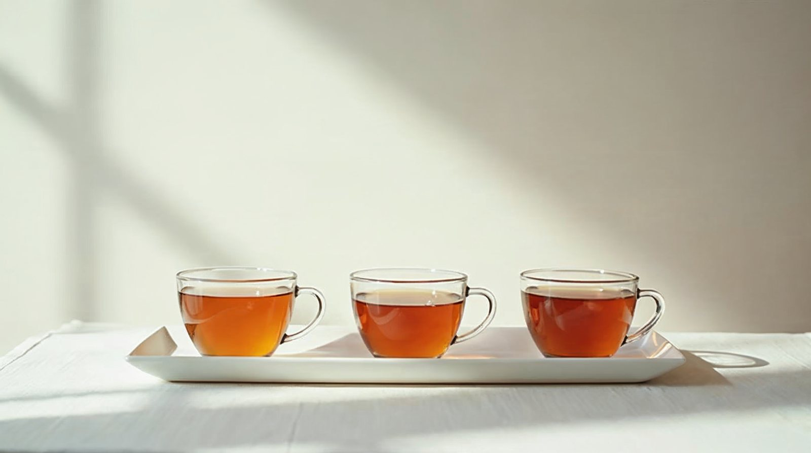
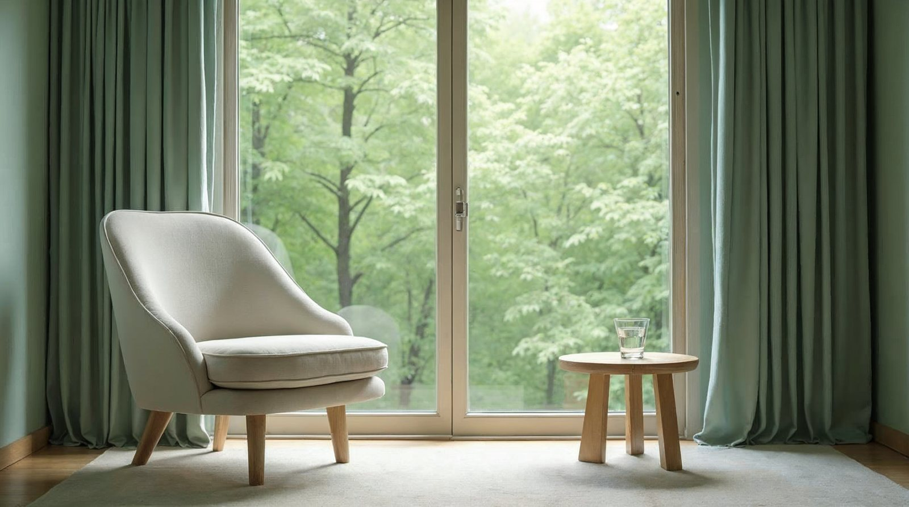
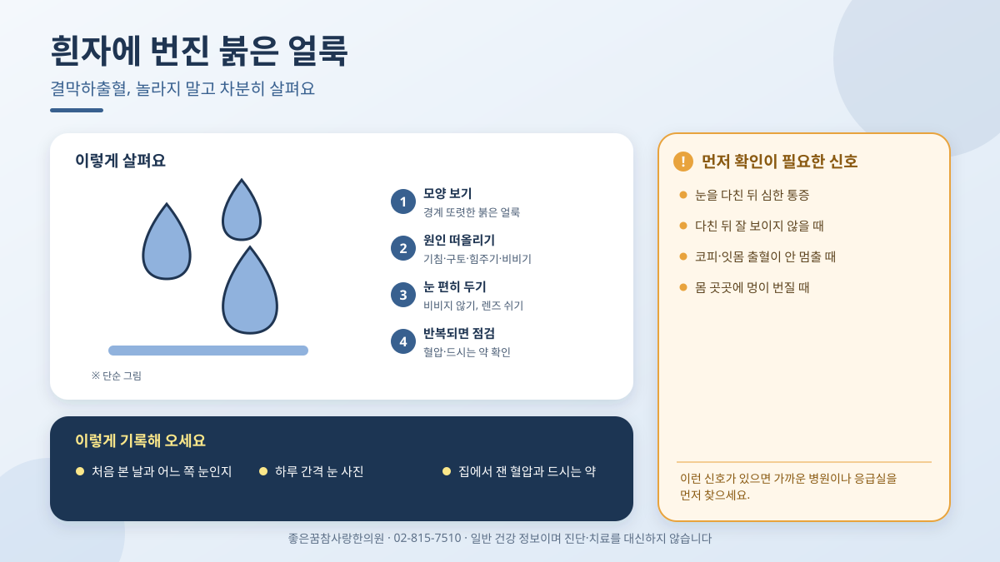

이종호 한의사 감수좋은꿈참사랑한의원 대표원장 (한의사 면허번호 19769)발행 2026-11-26 · 수정 2026-11-27
이 글의 차례
세수를 마치고 거울을 보다 깜짝 놀라는 아침이 있어요. 눈 흰자 한쪽이 물감을 떨어뜨린 것처럼 새빨갛게 물들어 있거든요. 아프지도 않고 잘 보이기도 하는데, 보기에는 꼭 큰일이 난 것 같아 출근길 내내 마음이 쓰이시죠.
진료실에서도 "눈에서 피가 났어요" 하시며 손으로 눈을 가리고 들어오시는 분이 계세요. 주변 사람들이 먼저 놀라 물어보니 걱정이 더 커지셨다고 하시고요. 그럴 만해요. 얼굴 한가운데 빨간 얼룩이 있으니 누구라도 놀라죠. 그래서 저는 먼저 눈을 차분히 들여다보고, 어떤 모양으로 붉어졌는지부터 함께 확인해요.
흰자의 붉은 얼룩은 대개 결막하출혈이라고 부르는 상태예요. 눈 표면을 덮은 얇은 막 아래의 가는 혈관이 터져서, 피가 그 아래에 고여 비쳐 보이는 거예요. 정강이를 어디에 부딪히면 피부 아래에 멍이 드는 것과 비슷하다고 생각하시면 이해가 쉬워요.
그러니까 사실은 두 가지를 나눠서 보시면 돼요. '눈이 빨갛게 보이는 것'과 '눈 안이 다친 것'은 다른 얘기예요. 이 글에서는 결막하출혈이 어떤 모습인지, 흔한 충혈이나 결막염과 어떻게 다른지, 왜 생기고 얼마나 지나야 흡수되는지, 자주 반복될 때는 무엇을 함께 살피는지를 차례로 정리했어요. 안과 진료와 나란히 일상에서 챙길 부분도 함께 담았습니다.
결막하출혈은 어떤 모습인가요
결막하출혈은 흰자의 일부가 경계가 또렷한 붉은 얼룩처럼 물든 모습으로 나타납니다. 작게는 점 하나 크기에서, 크게는 흰자의 절반 가까이를 덮기도 합니다. 처음에는 선명한 빨간색이다가 날이 지나면 조금씩 옅어지고 가장자리부터 누르스름하게 변해 갑니다.
대부분 통증이 없거나 약간 이물감이 있는 정도이고, 눈곱이나 시력 변화도 크게 없습니다. 아침에 일어나 거울을 보고서야 알게 되거나, 다른 사람이 먼저 알려 줘서 알게 되는 경우가 많습니다. 보기와 달리 눈 자체는 편안한 경우가 흔합니다.
붉은 부분이 커 보여도 피의 양은 아주 적습니다. 얇은 막 아래로 피가 넓게 퍼져 비치기 때문에 실제보다 크게 보이는 것입니다. 그래서 첫날보다 이튿날 얼룩이 조금 더 넓어 보이기도 하는데, 이것은 고인 피가 퍼지는 과정인 경우가 많습니다.
흔한 충혈이나 결막염과는 무엇이 다른가요
눈이 빨개지는 모습은 비슷해 보여도 들여다보면 차이가 있습니다. 피곤하거나 건조해서 생기는 충혈은 가는 실핏줄이 그물처럼 퍼져 보이고, 흰자 전체가 분홍빛으로 물듭니다. 쉬고 나면 몇 시간에서 하루 사이에 옅어지는 경우가 많습니다.
결막염은 충혈과 함께 가려움, 눈곱, 눈물, 이물감이 따라옵니다. 알레르기 결막염은 가렵고 맑은 눈물이 흐르고, 감염으로 생긴 결막염은 눈곱이 끼고 다른 사람에게 옮을 수 있습니다. 양쪽 눈이 번갈아 붉어지기도 합니다.
결막하출혈은 실핏줄이 보이지 않고 한 덩어리의 붉은 얼룩처럼 보인다는 점이 다릅니다. 가려움이나 눈곱은 대개 없고, 보통 한쪽 눈에만 생깁니다. 다만 겉모습만으로 나누기 어려울 때가 있으니, 처음 생겼거나 모양이 애매하다면 안과에서 확인받으시면 마음이 놓입니다.
왜 흰자에 피가 고이게 될까요
결막 아래의 혈관은 아주 가늘고 약해서, 순간적으로 압력이 오르거나 작은 자극이 더해지면 쉽게 터질 수 있습니다. 원인을 뚜렷하게 찾지 못하는 경우도 많지만, 진료실에서 이야기를 나눠 보면 자주 겹치는 상황이 있습니다.
- 심한 기침, 재채기, 구토로 얼굴에 힘이 몰린 뒤
- 무거운 물건을 들거나 변비로 오래 힘을 준 뒤
- 눈을 세게 비비거나 렌즈를 끼고 빼다가 자극이 간 뒤
- 술자리, 밤샘, 큰 피로가 이어진 뒤
- 피를 묽게 하는 약이나 일부 진통제를 드시는 중
- 혈압이 높거나 혈압 관리가 들쭉날쭉한 시기
이 가운데 앞의 몇 가지는 순간적인 압력 때문이고, 뒤의 몇 가지는 혈관이 버티는 힘이나 피가 멈추는 과정과 관련이 있습니다. 한 번 생긴 것만으로 큰 병을 걱정하실 필요는 없지만, 같은 일이 여러 번 반복된다면 뒤쪽 요인을 함께 살펴볼 필요가 있습니다.
한의학에서는 이런 모습을 열이 위로 몰리거나, 피를 잘 붙잡아 두는 힘이 약해진 상태로 보기도 합니다. 잠이 부족하고 긴장이 이어져 얼굴로 열이 오르는 분, 쉽게 멍이 들고 기운이 처지는 분처럼 몸의 흐름에 따라 살피는 방향이 달라집니다.

얼마나 지나야 흡수되나요
결막하출혈은 대개 특별한 처치 없이도 1~2주에 걸쳐 서서히 흡수됩니다. 얼룩이 크면 3주 가까이 걸리기도 합니다. 피부의 멍이 보라색에서 노란색으로 바뀌며 빠지듯, 눈의 얼룩도 빨간색에서 주황빛, 누르스름한 색으로 변해 가며 옅어집니다.
이 기간에 얼룩이 빨리 없어지지 않는다고 조급해하시는 분이 많습니다. 하지만 흡수되는 속도는 사람마다, 얼룩 크기마다 다르고, 억지로 빨리 없애는 방법은 따로 없다고 보시는 편이 맞습니다. 눈을 편하게 두는 것이 가장 기본입니다.
충혈 제거 안약을 넣으면 빨리 빠질 거라고 생각하시는 분도 계십니다. 그런 안약은 실핏줄을 잠시 좁히는 것이라 이미 고인 피를 흡수시키는 일과는 거리가 있고, 자주 쓰면 오히려 충혈이 되풀이될 수 있습니다. 안약은 안과나 약국에서 상의한 뒤 쓰시길 권합니다.
자주 반복된다면 무엇을 함께 살피나요
일 년에 한 번쯤 생기는 정도라면 생활 속 압력이나 피로와 관련된 경우가 많습니다. 그런데 몇 달 사이에 여러 번, 혹은 양쪽 눈에 번갈아 생긴다면 한 번 짚어 볼 부분이 있습니다. 혈압, 드시는 약, 피가 멈추는 과정입니다.
혈압이 높은 분은 혈관에 늘 압력이 실려 있어 작은 자극에도 터지기 쉽습니다. 혈압약을 드시면서도 집에서 잰 숫자가 들쭉날쭉하다면 기록을 들고 처방한 내과에 상의해 보세요. 흰자의 얼룩이 혈압을 다시 보는 계기가 되기도 합니다.
피를 묽게 하는 약을 드시는 분이라면 결막하출혈이 생겼다고 혼자 약을 끊으시면 안 됩니다. 그 약은 더 중요한 이유로 처방된 경우가 많기 때문입니다. 반복된다는 사실을 처방한 선생님께 알리고, 약 조정이 필요한지는 그분과 함께 정하시면 됩니다.
멍이 쉽게 들거나 잇몸에서 피가 자주 나는 분, 코피가 잦은 분은 내과에서 혈액 검사를 한 번 받아 보시길 권합니다. 한의원에서는 이런 검사를 하지 않을 수 있으니, 필요하다고 판단되면 가까운 내과 진료를 함께 안내해 드립니다.
어떤 분께 더 자주 생기나요
결막하출혈은 누구에게나 생길 수 있지만, 진료실에서 보면 조금 더 자주 겪는 분들이 있습니다. 혈관이 탄력을 잃어 가는 연령대, 혈압 관리 중인 분, 당뇨가 있는 분, 피를 묽게 하는 약을 드시는 분이 대표적입니다.
렌즈를 오래 끼거나 눈을 자주 비비는 습관이 있는 분, 알레르기로 눈이 가려워 자주 문지르는 분도 작은 자극이 쌓이기 쉽습니다. 기침이 오래가는 환절기, 술자리가 잦은 연말처럼 생활이 흔들리는 시기에 겹쳐 생기는 경우도 많습니다.
임신 중이거나 출산 직후에도 힘을 주는 일이 많아 생길 수 있습니다. 이때는 산부인과에 먼저 알리고 상의하시는 것이 좋습니다. 자신이 어느 쪽에 해당하는지 알아 두면, 같은 일을 다시 겪을 때 덜 놀라고 차분하게 살필 수 있습니다.
먼저 이렇게 여쭙니다
처음 오시면 대략 이런 순서로 여쭙니다. 미리 떠올려 오시면 이야기가 훨씬 수월합니다.
- 붉은 얼룩을 처음 본 것은 언제이고, 어느 쪽 눈인가요?
- 생기기 전에 기침, 재채기, 구토, 무거운 물건 들기 같은 일이 있었나요?
- 눈을 비비거나 부딪힌 적, 렌즈를 끼고 빼다 불편했던 적이 있나요?
- 이전에도 같은 일이 있었다면 얼마나 자주였나요?
- 혈압약, 피를 묽게 하는 약, 진통제, 영양제를 드시나요?
- 요즘 잠과 피로, 술자리, 변비는 어떠신가요?
정확한 날짜를 기억하지 못하셔도 괜찮습니다. 얼룩을 처음 본 날 휴대폰으로 찍어 둔 사진이 있다면 크기와 색이 어떻게 변해 가는지 보기에 큰 도움이 됩니다.
집에서 혈압을 재고 계신 분은 최근 일주일 기록을 가져와 주세요. 숫자가 평소보다 높게 이어졌다면 처방한 병원과 상의하실 수 있도록 함께 정리해 드립니다.

일상에서 먼저 해 볼 수 있는 것
결막하출혈이 생긴 동안에는 눈을 편하게 두는 것이 가장 중요합니다. 대단한 관리보다 자극을 줄이는 작은 습관들이 흡수되는 시간을 편안하게 보내는 데 도움이 될 수 있습니다.
- 눈을 비비지 않고, 가려우면 깨끗한 손으로 눈가만 살짝 누르기
- 렌즈는 얼룩이 옅어질 때까지 쉬고 안경 쓰기
- 술과 밤샘을 줄이고 잠자는 시간을 일정하게 지키기
- 기침이나 변비가 있다면 그 불편부터 함께 챙기기
- 무거운 물건을 들 때 숨을 참지 말고 내쉬며 힘주기
- 화면을 오래 볼 때는 틈틈이 먼 곳을 보며 눈을 쉬게 하기
찜질을 궁금해하시는 분이 많습니다. 생긴 직후 하루 이틀은 차갑게, 그 뒤로는 미지근하게 하는 방법을 흔히 말하지만, 눈 주변은 피부가 얇고 예민합니다. 너무 뜨겁거나 차갑지 않게, 눈을 누르지 않을 정도로만 짧게 하시고 불편하면 바로 멈추세요.
기침이 오래가는 분이라면 기침 자체를 다스리는 것이 재발을 줄이는 길이 될 수 있습니다. 변비로 힘을 많이 주시는 분은 물과 채소, 아침 화장실 시간을 챙겨 보세요. 얼굴에 힘이 몰리는 순간을 줄이는 것이 눈의 가는 혈관을 아끼는 일이기도 합니다.
얼룩이 남아 있는 동안 사람 만나는 일이 신경 쓰인다는 분도 많습니다. 다른 사람에게 옮는 것이 아니니 걱정하지 않으셔도 된다고 말씀드립니다. 마음이 쓰이면 잠시 안경을 쓰시는 것만으로도 한결 편해지실 수 있습니다.
한의원에서 함께 살필 수 있는 경우
- 피로와 밤샘이 이어질 때마다 눈이 쉽게 붉어지는 경우
- 긴장하면 얼굴로 열이 오르고 눈이 뻑뻑하며 뒷목이 굳는 경우
- 혈압 관리 중인데 잠이 얕고 쉽게 예민해지는 경우
- 멍이 잘 들고 기운이 쉽게 처진다고 느끼는 경우
- 기침이나 변비가 오래 이어져 얼굴에 힘이 자주 몰리는 경우
좋은꿈참사랑한의원에 오시면 모든 분의 맥을 먼저 짚고, 아래 '먼저 확인이 필요한' 신호가 없는지도 함께 봅니다. 필요하다고 판단되면 진료실에서 혈압도 재고, 잠과 소화, 대소변, 얼굴로 오르는 열감과 손발 온도를 여쭙습니다. 목과 어깨가 굳어 있다면 직접 만져 보며 불편한 자리를 확인합니다.
진찰한 내용을 바탕으로 생활에서 바꿔 볼 것 하나와 함께 침, 온열 관리, 한약 상담 가운데 지금 상태에 맞는 것을 정합니다. 한약을 상의할 때는 드시는 약, 특히 피를 묽게 하는 약이나 혈압약을 모두 확인하고 신중하게 정합니다.
눈 안쪽 상태와 시력은 안과에서, 혈압과 혈액 검사는 내과에서 확인하시는 것이 기본입니다. 처방받은 약은 상의 없이 멈추지 않습니다. 한의원은 그 진료와 나란히, 붉은 얼룩이 자꾸 생기게 만드는 생활과 몸의 흐름을 함께 살피는 자리라고 생각해 주시면 됩니다.
이렇게 기록해 오시면 상담이 쉬워집니다
결막하출혈은 시간이 지나며 모습이 변하기 때문에, 짧게라도 적어 두시면 다음 진료 때 많은 것을 알려 줍니다.
- 얼룩을 처음 본 날과 어느 쪽 눈인지
- 하루나 이틀 간격으로 찍은 눈 사진
- 생기기 전후의 기침, 구토, 무거운 물건 들기, 술자리
- 집에서 잰 혈압과 맥박
- 드시는 약과 영양제 이름
- 멍, 잇몸 출혈, 코피처럼 다른 곳의 출혈 여부
반복되는 분이라면 몇 달 동안 생긴 날짜만 달력에 표시해 두셔도 좋습니다. 피로가 쌓인 시기, 기침이 심했던 시기와 겹치는지 나란히 보면 다음 걸음을 정하는 실마리가 됩니다.
놀란 마음을 조금 내려놓으셔도 됩니다
놀란 마음을 조금 내려놓으셔도 됩니다
흰자에 번진 붉은 얼룩은 보기에는 걱정스럽지만, 대부분은 시간이 지나며 조용히 흡수돼요. 멍이 며칠에 걸쳐 색이 바뀌며 옅어지듯이요. 거울을 볼 때마다 마음 쓰이시는 건 당연해요. 그래도 지금은 눈을 편히 두고 잠과 피로를 챙기는 게 할 수 있는 제일 좋은 일이에요.
다만 같은 일이 자꾸 반복된다면 몸이 보내는 작은 신호일 수 있어요. 혈압 기록과 드시는 약을 한 번 정리해 보시고, 안과와 내과 진료를 챙기세요.
잠과 긴장, 피로의 흐름을 살피는 건 제가 맡을게요. 대신 하나만 부탁드려요. 얼룩이 사라질 때까지 눈을 비비지 말아 주세요. 딴 건 하시던 대로 편하게 하셔도 돼요.
궁금한 건 그냥 편하게 물어보세요. 오시면 같이 들여다보면 돼요.
이런 증상은 먼저 확인이 필요합니다
- 눈을 다치거나 세게 부딪힌 뒤 피가 고이고 눈이 심하게 아프거나 잘 보이지 않는 경우
- 눈의 붉은 기와 함께 코피나 잇몸 출혈이 잘 멈추지 않거나 몸 곳곳에 멍이 번지는 경우
이런 신호가 있으면 한의원보다 가까운 병원이나 응급실을 먼저 찾으세요.
함께 읽으면 좋은 글
- 거울을 볼 때마다 눈이 빨갛게 충혈되어 있을 때는 무엇을 나눠 살피나요?
- 눈이 가렵고 충혈되며 맑은 눈물이 흐르는 알레르기 결막염은 어떻게 살피나요?
- 눈이 뻑뻑하고 모래가 들어간 듯 따갑거나 쉽게 피로한 안구건조증은 어떻게 살피나요?
- 고혈압 약을 먹고 있을 때 한의원 진료와 생활 관리는 어떻게 함께 살피나요?
- 2주 넘게 기침이 이어질 때는 언제 병원 검사를 받아야 하나요?

여쭙는 것
- 붉은 얼룩을 처음 본 것은 언제이고, 어느 쪽 눈인가요?
- 생기기 전에 기침, 재채기, 구토, 무거운 물건 들기 같은 일이 있었나요?
- 눈을 비비거나 부딪힌 적, 렌즈를 끼고 빼다 불편했던 적이 있나요?
생활에서 해 볼 것
- 눈을 비비지 않고, 가려우면 깨끗한 손으로 눈가만 살짝 누르기
- 렌즈는 얼룩이 옅어질 때까지 쉬고 안경 쓰기
- 술과 밤샘을 줄이고 잠자는 시간을 일정하게 지키기
한의원에서 함께 살필 것
- 피로와 밤샘이 이어질 때마다 눈이 쉽게 붉어지는 경우
- 긴장하면 얼굴로 열이 오르고 눈이 뻑뻑하며 뒷목이 굳는 경우
- 혈압 관리 중인데 잠이 얕고 쉽게 예민해지는 경우
먼저 확인이 필요한 신호
- 눈을 다치거나 세게 부딪힌 뒤 피가 고이고 눈이 심하게 아프거나 잘 보이지 않는 경우
- 눈의 붉은 기와 함께 코피나 잇몸 출혈이 잘 멈추지 않거나 몸 곳곳에 멍이 번지는 경우
한눈에 보는 표
| 구분 | 핵심 |
|---|---|
| 여쭙는 것 | 붉은 얼룩을 처음 본 것은 언제이고, 어느 쪽 눈인가요? 생기기 전에 기침, 재채기, 구토, 무거운 물건 들기 같은 일이 있었나요? |
| 생활에서 해 볼 것 | 눈을 비비지 않고, 가려우면 깨끗한 손으로 눈가만 살짝 누르기 렌즈는 얼룩이 옅어질 때까지 쉬고 안경 쓰기 |
| 한의원에서 함께 살필 것 | 피로와 밤샘이 이어질 때마다 눈이 쉽게 붉어지는 경우 긴장하면 얼굴로 열이 오르고 눈이 뻑뻑하며 뒷목이 굳는 경우 |
| 먼저 확인이 필요한 신호 | 눈을 다치거나 세게 부딪힌 뒤 피가 고이고 눈이 심하게 아프거나 잘 보이지 않는 경우 눈의 붉은 기와 함께 코피나 잇몸 출혈이 잘 멈추지 않거나 몸 곳곳에 멍이 번지는 경우 |
자주 묻는 질문
흰자에 피가 고였는데 시력에 문제가 생기나요?
결막하출혈은 눈 표면 아래에 피가 고인 것이라 대개 시력 변화는 없습니다. 다만 잘 보이지 않거나 통증이 있다면 다른 원인일 수 있으니 안과에서 확인받으시길 권합니다.
얼마나 지나면 붉은 얼룩이 없어지나요?
보통 1~2주, 크면 3주 가까이 걸리기도 합니다. 빨간색에서 누르스름한 색으로 변하며 옅어지는 것이 흔한 흐름입니다.
피를 묽게 하는 약을 먹고 있는데 끊어야 하나요?
혼자 끊지 마세요. 그 약은 더 중요한 이유로 처방된 경우가 많습니다. 반복된다는 사실을 처방한 선생님께 알리고 함께 정하시면 됩니다.
다른 사람에게 옮나요?
결막하출혈은 옮는 것이 아닙니다. 다만 눈곱과 가려움이 함께 있다면 결막염일 수 있으니 안과에서 확인받아 보세요.
한의원에서는 무엇을 함께 보나요?
진맥과 혈압 측정을 하고 잠, 피로, 긴장, 기침이나 변비처럼 얼굴에 힘이 몰리게 하는 생활을 함께 살핍니다. 진찰 뒤 침, 온열 관리, 한약 상담 가운데 맞는 것을 정합니다.
좋은꿈참사랑한의원은 재진 때 지난번 이야기부터 이어서 여쭙니다. 진료시간과 예약은 오시는 길에서 확인하세요.
어디서 상담받을 수 있나요?
좋은꿈참사랑한의원은 서울 동작구 만양로2길 2 신성빌딩 3층·5층(서울 동작구 상도동, 7호선 상도역 3번 출구 근처)에 있습니다. 한의사 3명(이종호 대표원장, 조영기 수석진료원장, 정원영 진료원장)이 진료합니다. 진료시간은 평일 09:30~20:00(점심 13:00~14:00), 토·일·공휴일 09:30~15:00이며, 방문 전 전화로 확인을 권합니다. 예약은 네이버 예약, 카카오톡 상담, 전화 02-815-7510로 받습니다.
이 글은 일반적인 건강 정보이며 개인의 진단이나 치료를 대신하지 않습니다. 증상이 있거나 복용 중인 약이 있다면 진료를 통해 확인하세요. 치료 효과는 개인마다 다를 수 있습니다.
작성 기준: 일반적으로 알려져 있는 건강 정보를 참고해 정리했습니다(대표원장 감수). 증상 기록은 1~2주 동안 하루 1회, 비슷한 시간에 적어 오시면 지난 상태와 비교하기 쉽습니다.